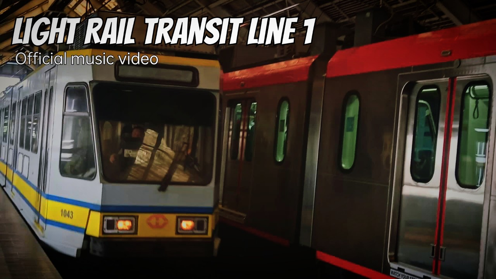

LRT and MRT songs
In this page, you can listen songs that you're never heard before. Justin's songs are most about trains.
Light Rail Transit Line 1

This song was released on January 31, 2023. It can help to commutes to ride LRT-1 because it's so fast, cold aircons and beautiful views. Justin always ride LRT-1 because of that, and he offer free ride for students if they are good.
In the line Masaya ako pag may pasok means they are happy in each school classes because it can meet with classmates, friends, teachers, and many more and also it can go somewhere and ride LRT-1.
His song reaches 1k views on YouTube so that views can ride LRT-1 because of good service of LRT-1.
Official music video

Lyrics
More information about this song here.
Light Rail Transit Line 1
Light Rail Transit Line 1 karaoke version
20 Stations of LRT-1
The song replaced with some lyrics from The Twelve Days of Christmas. Their lyrics are in first paragraph:
"On the first day of Christmas my true love sent to me"
Replaced with
"On the first station of LRT-1"
And followed by stations of LRT-1 such as Baclaran, EDSA, Libertad, Gil apuyat, etc.
This song make people enjoyed to listen my first song ever I made. Unfortunately, after years, the song getting lose energy that means that people who listen this song make people bored because of repetition of verses and stations.
Karaoke version video
Lyrics
20 Stations of LRT-1 karaoke version
13 Stations of MRT-3
The description for this song is the same as stated on above (20 Stations of LRT-1).
Official music video
Karaoke version video
Lyrics
13 Stations of MRT-3
13 Stations of MRT-3 karaoke version